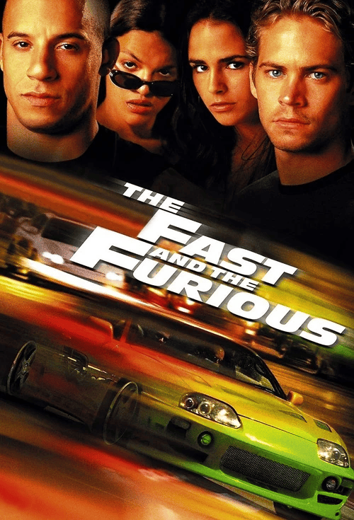
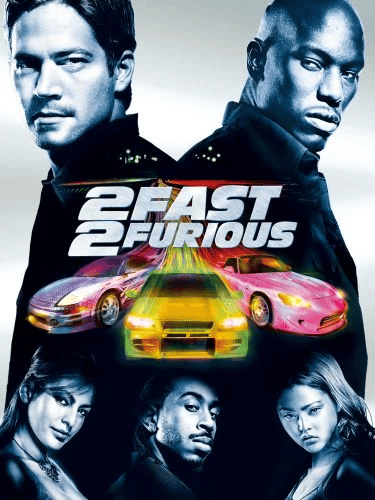
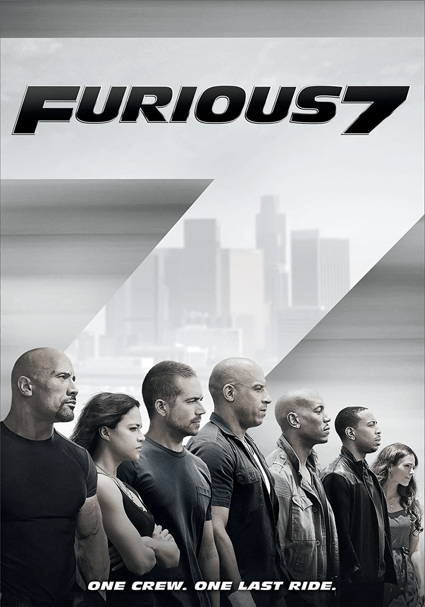
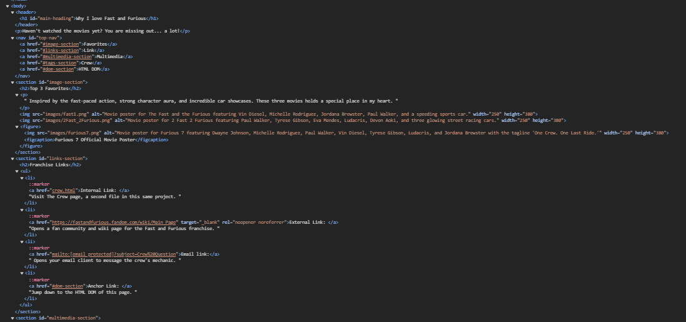

Haven't watched the movies yet? You are missing out... a lot!
Top 3 Favorites
Inspired by the fast-paced action, strong character aura, and incredible
car showcases. These three movies holds a special place in my heart.



Figure 1: Furious 7 Official Movie Poster
Franchise Links
Internal Link: Visit The Crew page, a second
file in this same project.
External Link: Opens a fan community and wiki page for the Fast and Furious
franchise.
Email link:
Opens your email client to message the crew's mechanic.
Anchor Link: Jump down to the HTML DOM of
this page.
Multimedia
It's Brian
Racing Highlights
Crew Notes
I don't have friends, I got family.
— Dominic Toretto
Fun fact: NOS really works in
cars, but not quite the way The Fast and Furious shows it. No blue
flames from the exhaust, no instant teleport mode, and not without
serious risk to the engine.
One rule of the crew:
You don't turn your back on family— even when they do.
Brian's Best Ride
Model: 1999 Nissan Skyline GT-R R34
Feature: 2.6L RB26DETT inline-6 twin-turbo
Engine: Approx. 330-450 hp
Highlight: All-wheel drive traction and precision handling
HTML DOM

Figure 2: DOM tree showing body at the top all the way down through
link-section to ul to li and to a.